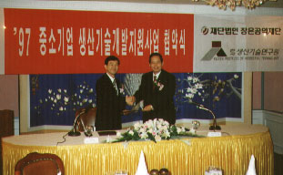
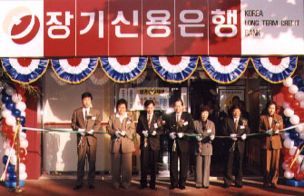
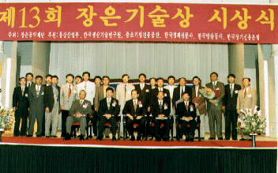
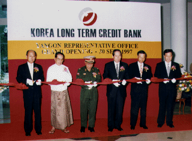
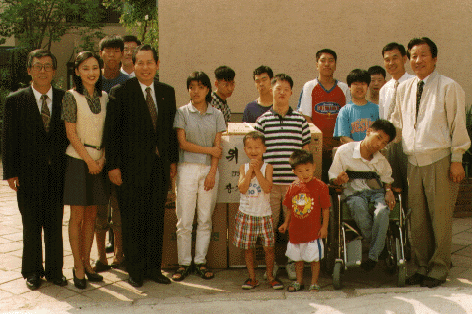
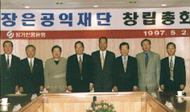
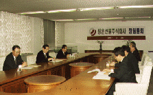
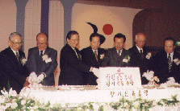
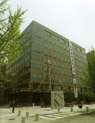
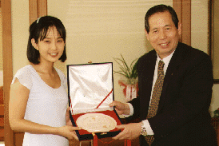

최근 소식('97년 7월~)
 신정동지점(12/10),
서현역지점(12/22), 화정역지점(12/24) 개점
신정동지점(12/10),
서현역지점(12/22), 화정역지점(12/24) 개점
당행은 12월 한 달 동안 3개 지점을
개점하였습니다. 3개 지점 모두 가계금융
전담점포로서 서울에 1곳, 경기지역에 2곳입니다.
금융환경 급변기에 고객의 재산증식에 도움이 될
수 있도록 최선을 다 하겠습니다. 지역주민
여러분의 많은 성원 부탁드립니다.
＊신정동지점 (김지섭지점장)
연락처 : 02-648-8111 / 서울시 양천구 신정2동 88-5
(미진스포츠센터 1층)
＊서현역지점 (김평주지점장)
연락처 : 0342-706-0111, 경기 성남시 분당구
서현동 267-2
＊화정역지점 (백승주지점장)
연락처 : 0344-938-7700 / 경기 고양시 덕양구
화정동970 (위성스타렉스빌딩 2층)
11월3일 : 장은공익재단,
중소기업 기술개발자금 2억원 출연

장은공익재단(이사장 金光鉉)과
한국생산기술연구원(원장 李軫周)은 11월 3일(월),63빌딩
58층 칸나홀에서 국내 산업기술의 연구개발을 지원하는
사업의 일환으로 중소기업
생산기술개발지원사업을 위한 협약을 체결하고
중소기업의 기술개발과 이와 관련된 지원사업을
적극적으로 펴 나가기로 하였습니다.
중소기업 생산기술개발지원사업은 중소기업
공통애로 취약기술개발과 대일 무역역조가 큰
자본재의 국산화 지원을 주요 목적으로 작년부터
장기신용은행과 한국생산기술연구원이 기금을
조성, 시행하여 왔으나 올해부터는 장기신용은행이
설립한 장은공익재단과 생산기술연구원이
공동으로 주관합니다.
양 기관은 협약체결 후 11월중 사업시행 공고를
하여 연구과제를 선정하게 되며 연구기금은 양
기관이 각각 2억원씩 출연하게 됩니다. 장은공익재단은
기술연구개발지원사업을 통한 중소기업 지원,
학술연구 및 문화예술지원사업을 주요 사업목적으로
지난 7월에 설립되었으며 향후 중소기업지원활동을
포함한 공익사업을 적극 지원할 계획입니다.
반포지점(10/23),
서대전지점(10/28) 개점

당행은 10월23일(목) 반포지점,
28일(화) 서대전지점을 개점하였습니다. 이번에
개설한 두 지점은 가계금융 전담점포로써 금융상담전문가들을
배치하여 실속있는 상품소개에서 금융소득 종합과세까지
고객께서 늘 궁금해 하시는 사항을 정성껏 상담해
드릴 것입니다.
＊반포지점 (이태규지점장) : 02-3477-0700,
서초구 반포본동 1190 (반포상가
Í동 1층)
＊서대전지점(김사진지점장) : 042-534-5400,
대전 중구 오류동 151-17
<사진은 반포지점 개점식 모습>
10월8일
: 제13회 장은기술상 시상식

재단법인 장은공익재단(이사장 金光鉉)은 8일, 서울
인터컨티넨탈호텔 그랜드 셀라돈볼룸에서 총 상금및
부상 1억원 규모의 제13회 장은기술상 시상식을
실시했습니다.
장은기술상은 장기신용은행이 지난 85년에
제정하여 그동안 시행해 온 상이었으나 올해는
창립 30주년 기념사업의 하나로 기업이윤의
사회환원을 위해 설립한 장은공익재단이 이를
계승하여 시상하게 되었습니다.
동상은 산업발전의 숨은 공로자인 생산 및
연구현장의 기술기능직 근로자, 연구원 및
공업계 고등학교 교사들의 공로를 치하하고
창의적인 업무자세와 연구개발의욕을 북돋워
산업발전에 더욱 정진할 수 있도록 하는 것을
목적으로 하고 있습니다.
수상자 명단
대상(통상산업부장관상) :
- 핸디소프트솔루션개발팀 전영표이사외 4명(중소기업부문)
- 한미약품공업 중앙연구소 우종수과장외 4명(대기업부문)
특상(각 후원기관장상) :
- 린나이코리아 R&D CENTER 이응재팀장외 4명(장기신용은행장상)
- 부성실업 부설연구소 임경찬소장(중소기업진흥공단
이사장상)
- 삼양사 섬유연구실 방호주 선임연구원(한국생산기술연구원장상)
- 대구도시가스 연구개발실 황정훈
선임연구원외 4명(한국경제신문사장상)
우수상(재단 이사장상) :
공로상(재단 이사장상) :
- 광운전자공업고등학교 김보원 교사등
서울지역 기술담당교사 10명
수상자 전원에겐 4박5일간 해외연수기회가
부여되었으며 이와는 별도로 대상수상자에겐 5백만원,
특상 각각 3백만원, 우수상과 공로상에는 각각 1백만원의
상금이 주어졌습니다. 그리고, 공로상 수상자
소속학교에는 교육기자재(범용레이져 프린터)가
증정되었습니다.
10월3일 : 장기신용은행,
S&P 기존 신용등급 유지로 국내 최우수 민간은행
자리매김!
10월 3일 발표된 미국의 세계적 신용평가기관인
STANDARD & POORS사의 국내 은행 신용평가 결과, 우리은행과
제일은행의 신용등급은 그대로 유지되었으나
한일, 신한, 외환은행은 종전보다 한단계씩 하향
조정되었습니다. 이에 따라 우리은행은 단기는
A2, 장기는 A-(마이너스)를 유지하였으며 국내
민간은행중 국민,신한과 더불어 가장 우수한
신용등급을 보유하게 되었습니다. 이는 당행의
양호한 자산건전성과 영업자산증대에 따라
수익력이 향상된 것을 반영한 결과로 향후
해외자금조달등 경영활동에 상당히 긍정적인
효과를 가져올 것으로 예상됩니다.
9월30일 : 미얀마에
양곤사무소 개설

당행은 30일(화), 미얀마에
양곤사무소(소장 최윤)를 개설했습니다. 장은은
이로써 해외현지법인 2개(홍콩,런던), 지점 4개(뉴욕,동경,싱가폴,케이만),
사무소 3개(청도,호치민,양곤)등 실질적인 Global
Network체제를 갖추게 되었습니다.
9월11일 : 불우이웃돕기 행사
실시

당행 임직원은 추석을
맞이하여 불우이웃돕기행사를 실시하였습니다.
은행장을 비롯한 임직원은 4개팀으로 나뉘어
은평구 구산동 소재'은평천사원', 양천구 신월동
소재 'SOS마을', 송파구 거여동 소재 '신아원',
영등포구 신길동 소재 '이냐시오집'을 방문하여
불우아동 및 무의탁노인을 위로하고 TV, VTR,
세탁기, 냉장고등의 생활용품을 전달하였습니다.
9월10일 : 올림픽 출장소
지점 승격!
당행 올림픽출장소가 개점 1년9개월만인 9월10일,
지점(지점장 강종훈)으로 승격되었습니다.
주 소 : 송파구 방이동89-11
올림픽선수기자촌아파트 중심상가 176-181호 (선수촌아파트
2, 3단지사이 상가내)
전화번호 : 431-3600
8월26일 : 장기신용채권 10조
돌파!
한국개발금융으로 출범한 장기신용은행이
은행전환 17년만에 주력 상품인 장기신용채권 발행잔액
10조원을 돌파했습니다. 장은은 8월 26일 현재
채권발행잔액 10조 1,383억원을 달성하였는데 이를
직원 1인당 으로 환산하면 90억원으로 창립이래
유지하여 온 '생산성 1등은행'의 면모를 계속
유지하고 있습니다.
7월 22일 : 베트남에 호치민
사무소 개설
당행은 22일(화), 베트남에 호치민 사무소(소장 최성완)를
개설했다. 동행은 지난 3월 싱가폴지점을 개점한
이래 금년 하반기에도 미얀마와 인도에 사무소를
개설할 예정이다.
7월 1일 : 장은공익재단 설립

지난7월 1일, 창립30주년
기념사업의 하나로 기업이윤의 사회환원 실천을
위해 재단법인 장은공익재단 설립하였습니다.
장은 공익재단은 설립 초년도의 주요사업으로
기술개발지원사업, 기술상 시상사업을 실시할
예정이며, 장학사업을 비롯, 학술연구지원 및 문화예술지원사업등을
적극적으로 발굴, 추진할 계획입니다.
재단법인 장은공익재단의 초대이사장에는 김광현
은행장, 이사에는 김병주 서강대교수, 김진현
서울시립대총장, 박용정 한국경제신문 대표이사,
어윤배 숭실대 총장, 유덕형 서울예전 이사장,
장영신 애경그룹 회장이 위촉되었으며, 감사에는
오세광 삼일회계법인 부회장, 최창순
산동회계법인 대표 등 사회 각계의 저명인사로
임원진이 구성되었습니다.

'97년 상반기 주요 소식
장은선물주식회사 설립

지난 3월26일, 장은그룹의 9번째 계열사로 장은선물주식회사를
설립하였습니다. 장기신용은행 본점 서관에 위치하고
있으며, 독자적인 업무체제 형성을 위한
자체전산시스템을 구축하고 있습니다. 또한
그룹통합 정보시스템에 연결시킬 계획이며, 해외선물중개영업에
참여하여 수익성 높은 자산의 운용 및
중개영업의 활성화를 이룰 것이다.
30주년 리셉션 개최

창립 30주년을 맞아 4월25일 저녁
6시에 호텔신라에서 기념리셉션을 가졌습니다.
이 날 리셉션에는 강경식 부총리 겸
재정경제원장관, 이경식 한국은행총재, 이동호
전국은행연합회 회장, 김창성 한국경영자총협회
회장, 박상희 중소기업협동조합중앙회 회장,
박성용 금융개혁위원회 위원장, 남덕우 전 총리,
차일석 국민일보 사장, 김진억 내외경제신문
사장 등 1,000명이 참석하였습니다.
본점 동관 준공

여의도 현 본점 사옥 옆에
지하 6층, 지상 9층의 첨단정보화빌딩을 신축하여
지난 3월28일 준공을 마치고, 4월 25일 준공식을
가졌습니다. 이 건물에는 최첨단시설과 OA시스템
등이 갖추어져 있으며, 370대의 주차시설이 마련되어
있어 방문고객의 편의를 제공하고 있습니다.

우수고객에게 감사패 전달
창립30주년을 맞이하여 경방 등 여신고객과 탤런트
최진실씨 등 수신고객, 윌리암 다이아몬드등
창업유공자에게 감사의 표시로 감사패를
증정하고 지속적인 관심과 애정을 당부하였습니다.
한편 최진실씨는 이날 영업부의 1일 명예지점장으로
위촉되어 객장에서 직접 고객을 맞이하기도
하였다.
자매결연마을 산매리에
경로당 신축자금 증정
지난 6월28일 농촌 자매결연마을인 전북 정읍시
이평면 산매리를 방문, 산매경로당 신축자금을
증정하였습니다. 산매리마을과는 '94년 5월에
자매결연을 맺어, 현재까지 문화기행, 농산물
구입, 농촌 일손돕기 등 지속적인 교류를
맺어오고 있습니다.
개점 및 이전 소식('97년
상반기)
싱가폴지점(지점장 송영국)
개점
지난 3월 11일, 동남아지역의 금융중심지인
싱가폴에 지점을 개설하였습니다. 싱가폴지점은
사무소 개설후 3년만에 이뤄진 것이며 '96년 11월
개설된 뉴욕지점에 이은 6번째 해외점포입니다.
또한 금년중 개도국에 대한 진출을 보다 활발히
하기 위하여 미얀마, 베트남, 인도 등에
연락사무소를 개설할 예정입니다.
남대문지점(지점장 김영수)
개점
지난 6월 30일 기업고객의 복잡다양해지는
금융욕구에 부응하고자 기업금융전담점포인 남대문지점을
개설하였습니다. 이 지점은 스카이점포로 금융의
중심지인 태평로에 위치하여 기업금융전반에
걸친 영업활동을 전담하게 될 것입니다.
현지법인 이전
홍콩 현지법인과 런던 현지법인이 각각 4월1일, 6월9일에
새사무실로 이전하였습니다.
홍콩현지법인 주소 : 19/F, Gloucester Tower, 11 Pedder
Street, Central, Hong Kong (TEL : 852-2521-3584)
런던현지법인 주소 : 6th Floor, 7 Princes Street, London
EC2R8AQ, U.K. (TEL : 44-171-776-8300)